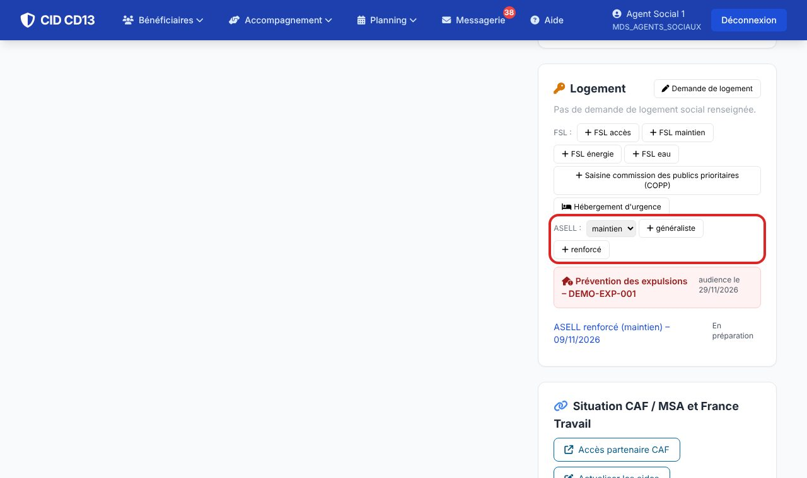
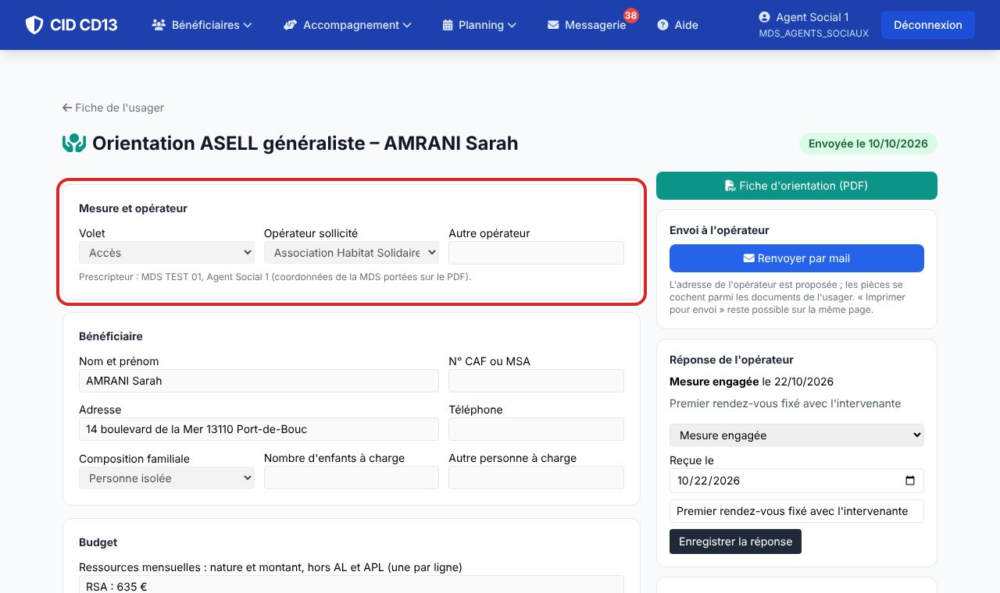
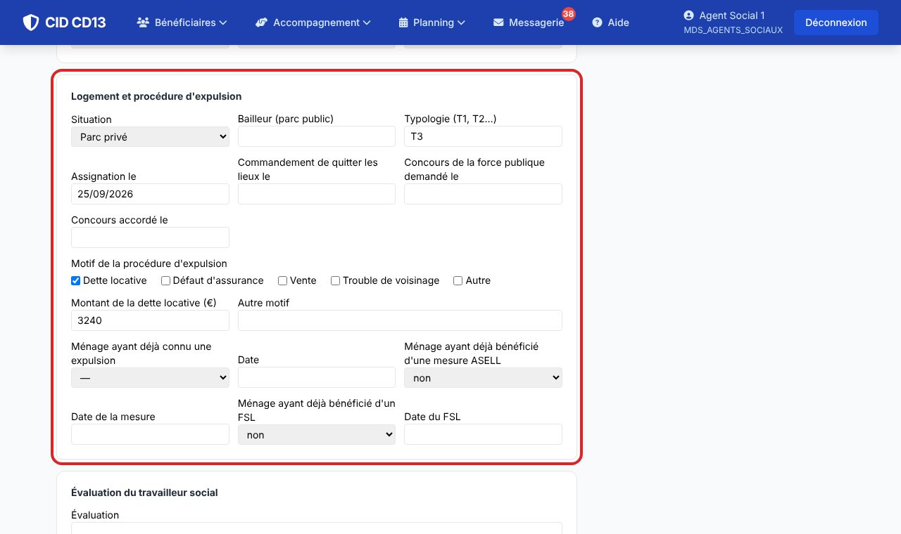
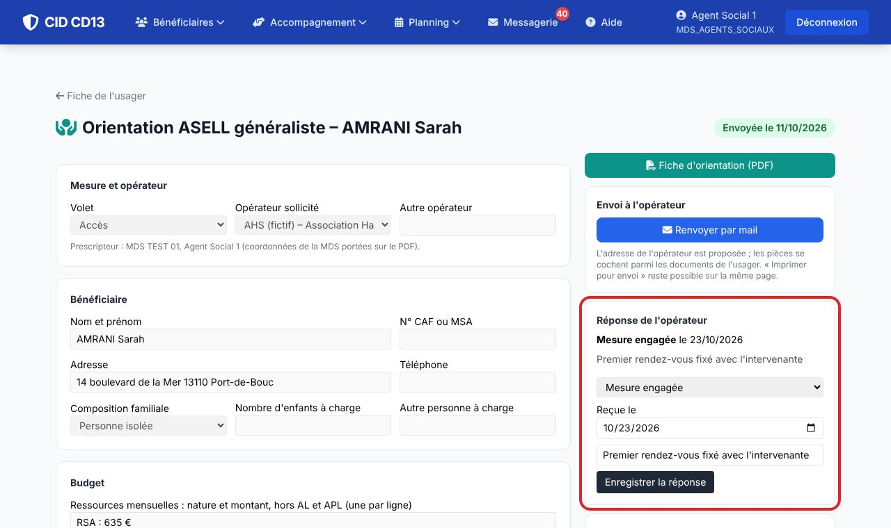

1Créer la fiche

- Sur la fiche de l'usager, encart « Logement », ligne ASELL : choisissez le volet (maintien ou accès), puis généraliste ou renforcé.
- Depuis un dossier de prévention des expulsions : « Solutions pour le ménage » → Orientation ASELL renforcé.
2Vérifier ce qui est prérempli

- CID reprend l'identité, le numéro CAF, l'adresse, le téléphone, la composition familiale, les ressources hors aide au logement, l'AL ou l'APL, le loyer et les dettes du budget du foyer, et sait si un FSL est en cours ou si une mesure ASELL a déjà été demandée.
- Choisissez l'opérateur sollicité dans la liste (ou saisissez-en un autre).
3ASELL renforcé : la procédure d'expulsion

- Quand l'usager a un dossier de prévention des expulsions, le bailleur, la dette et les dates (assignation, commandement de quitter les lieux, concours de la force publique) sont repris des étapes du dossier.
4Évaluer, envoyer, noter la réponse

- Rédigez l'évaluation du travailleur social, enregistrez, contrôlez le PDF.
- Envoi par mail : l'adresse de l'opérateur est proposée, les pièces se cochent parmi les documents de l'usager. L'envoi est tracé (et inscrit dans le dossier d'expulsion s'il y en a un).
- À la réponse de l'opérateur : mesure engagée, liste d'attente ou orientation non retenue.
Bon à savoir
- La liste des opérateurs conventionnés se charge en administration (Logement → Opérateurs ASELL) à partir du tableau annuel du Département. Les opérateurs du secteur de l'usager (selon sa commune) sont proposés en premier.
- Une fiche envoyée ne se modifie plus ; un brouillon peut être supprimé.
Et ensuite ?
Cliquez sur une image pour l'agrandir. Le cadre rouge montre où cliquer ou quoi remplir. Toutes les données affichées sont fictives.